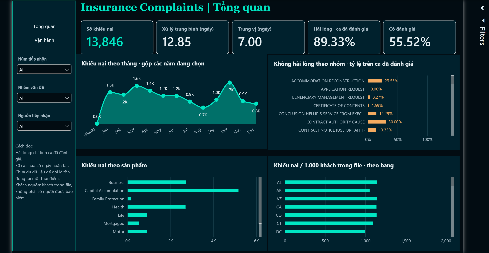

01
Machine Learning & Deep Learning
Train, evaluate and improve ML and deep learning models for classification, forecasting and imbalanced data.
PyTorchTensorFlowScikit-learnXGBoost
Le Hoang Gia Vi — Fresher AI Engineer
Data Science graduate with practical internship experience in machine learning, computer vision, and AWS cloud deployment. Hands-on experience developing real-time vision pipelines and LLM/RAG applications, bridging the gap between experimental models and functional services. Focused on code reliability, efficient deployment, and continuous performance monitoring to deliver practical AI solutions.

Focused technologies

I am a Data Science graduate with hands-on experience in computer vision, machine learning, LLM-based applications and cloud AI deployment. My work covers model training, evaluation, real-time inference, retrieval systems and end-to-end AI pipelines.
I care about AI systems that are accurate in tests and also simple to reproduce, efficient to run and useful in real applications.
I focus on model development, computer vision, retrieval-based applications and clean engineering work that turns experiments into usable systems.

Train, evaluate and improve ML and deep learning models for classification, forecasting and imbalanced data.
Build image and real-time vision pipelines for detection, recognition, preprocessing and faster inference.
Build retrieval-based AI apps that connect data pipelines, embeddings, LLMs and easy-to-use interfaces.

My experience combines AI engineering internships, cloud work, academic learning and research. Each step helped me bring models from data and tests to useful AI systems.
Fine-tuned YOLOX-tiny on 2,336 COCO images: AP50 85.0%, AP@[0.50:0.95] 61.8%, 5.91 ms/image; proposed an active-learning loop.
Built a fraud-detection flow using API Gateway, Lambda, Kinesis, SageMaker, SNS, Firehose and S3 for prediction history.
Data Science graduate · GPA 3.38/4.00.
Built an AI fall-detection solution using camera and CSI signals with real-time email alerts.
The first three projects are the strongest examples from my CV. Use the arrows to explore more AI, data and research repositories.
 01
01
Analyzed 1.05M FMCG sales records across six countries, connecting SKU concentration, channels and promotions with planning guardrails; the top 20% of SKUs generated 50.04% of net sales and XGBoost reached 26.97% test WAPE.
 01
01
Built a Power BI supply-chain dashboard after EDA and data-quality checks; validated 11 KPIs including 2,200 orders, 34.40% gross margin and 92.55% OTIF.
 01
01
Built a banking analytics pipeline with SQL Server, Power BI and K-Means segmentation, using 157K+ transactions and 2K+ customer profiles.
 02
02
Led a real-time classroom monitoring system with 90% emotion classification and 95% identity recognition accuracy; showed trends for early support.
 03
03
Lightweight CNN-Transformer pipeline for real-time facial emotion recognition across eight classes.

04Across 13,846 complaints, resolution averaged 12.85 days versus a 7-day median, highlighting long-running cases. Recommended reviewing priority cases and CRO intake, and improving status logging: only 31.42% of complaints had recorded status history.
 04
04
Built a Streamlit LLM assistant that turns uploaded CSV files and plain-language questions into analysis and interactive charts.
 05
05
Transfer-learning system for recognizing diseases on cocoa pods from images.
 06
06
Built a fraud-detection pipeline for imbalanced data using Bi-LSTM and SMOTE-ENN, reaching AUC 0.990 and Recall 0.953.
 07
07
Camera-based system for identifying available parking spaces in real time.
 08
08
Classification workflow for analyzing patient indicators and predicting disease risk.
 09
09
FullRAG and agent-based system for VN30 stock analysis using financial data, news and reports.
Research experience helps me ask clear data questions, design better experiments, evaluate models carefully and communicate technical findings clearly.

AI application to identify cocoa diseases from the Cacao Disease dataset.
Extended UTAUT study on factors that affect acceptance of the Safe Exam Browser tool in online exams.
Hybrid approach combining Bi-LSTM and SMOTE-ENN for highly imbalanced financial transaction data.
Custom hybrid neural-network model for real-time facial emotion recognition across eight emotion classes.
Hybrid GRU-Fourier Neural Operator study for flood-water-level forecasting with deep-learning comparison on time series.
I am currently seeking an AI Engineer role where I can contribute to machine learning, computer vision, retrieval and cloud AI solutions.